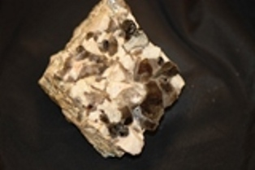

Plate Tectonics
When Carol King wrote, "I feel the earth move under my feet" in the 1970s, she was not referring to earthquakes. However, the earth does move under your feet due to a process called plate tectonics, which was first theorized as continental drift by Richard Wegener in 1915. Wegener wondered how fossils of the same species could appear on two different continents separated by oceans. Early theories were that the continents were connected by ancient land bridges that had long disolved.
 Though not the first to theorize about a single continent, Wegener presented the most evidence to support this theory. The single continent was called Pangea. These plates move in relation to one another at one of three types of plate boundaries: convergent, or collisional boundaries; divergent boundaries, also called spreading centers; and conservative transform boundaries. Earthquakes, volcanic activity, mountain-building, and oceanic trench formation occur along these plate boundaries. The lateral relative movement of the plates typically varies from 0–100 mm annually.
Though not the first to theorize about a single continent, Wegener presented the most evidence to support this theory. The single continent was called Pangea. These plates move in relation to one another at one of three types of plate boundaries: convergent, or collisional boundaries; divergent boundaries, also called spreading centers; and conservative transform boundaries. Earthquakes, volcanic activity, mountain-building, and oceanic trench formation occur along these plate boundaries. The lateral relative movement of the plates typically varies from 0–100 mm annually.